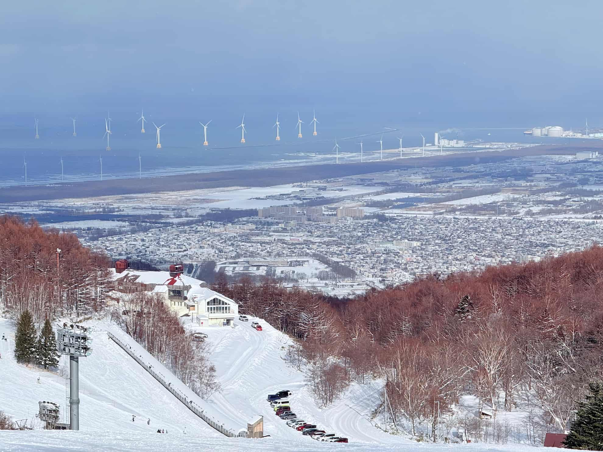
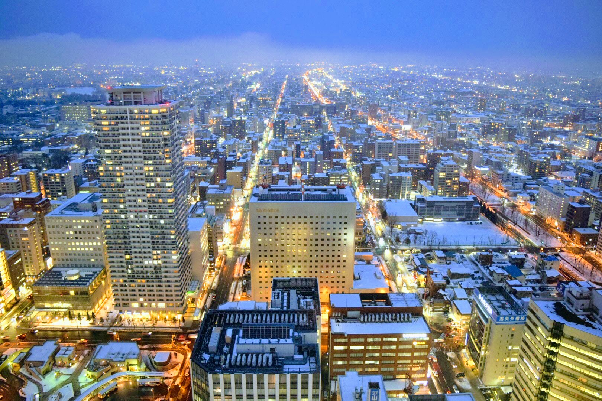
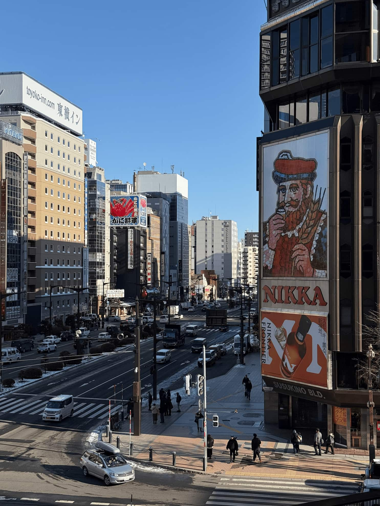
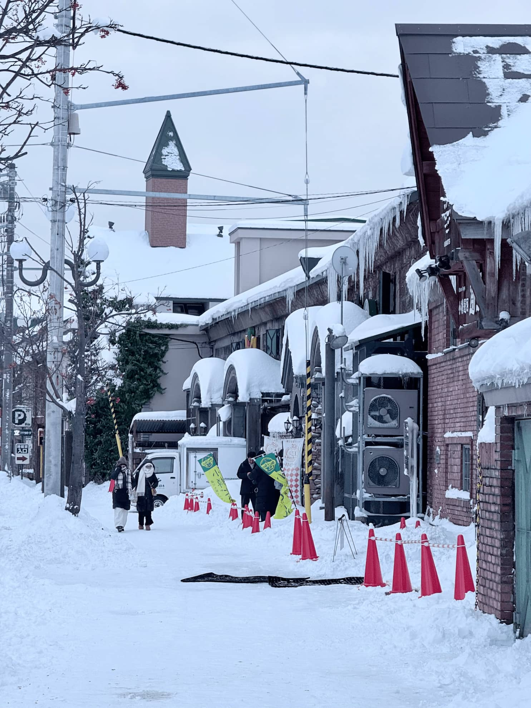
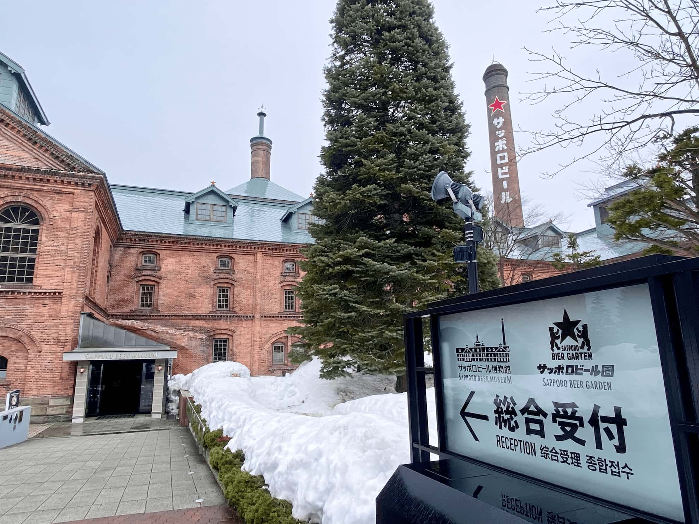
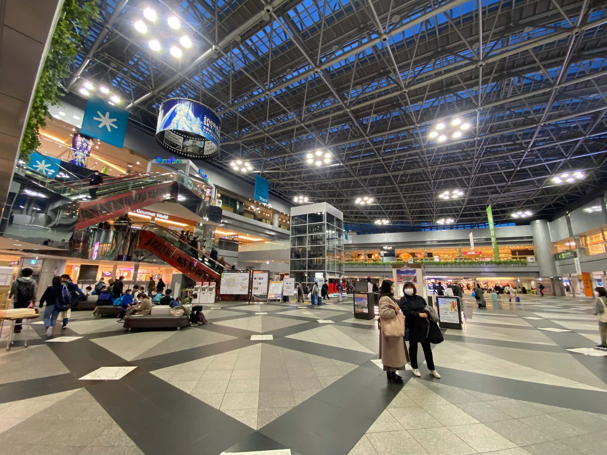

この旅を選ぶ理由
山海の絶景
石狩湾を一望
家族で海を見ながらスキー
安心の指導
丁寧な解説
インストラクターが完全サポート
優しい設計
スノーエスカレーターで登坂なし
お子様も疲れ知らず
記念撮影
インストラクターが撮影
家族の思い出を残します

札幌テイネスキー場 × 小樽運河 × 定番グルメの饗宴
石狩湾を一望
家族で海を見ながらスキー
丁寧な解説
インストラクターが完全サポート
スノーエスカレーターで登坂なし
お子様も疲れ知らず
インストラクターが撮影
家族の思い出を残します

【テーマ：都市散策・高層からの眺望】
✈️ 新千歳空港 → JR札幌駅
【テーマ：インストラクターの丁寧な解説・スノーエスカレーターで楽々練習】
ステップ1：JR札幌駅 → 手稲駅
JR函館本線「快速列車」で約10〜15分、「手稲駅」で下車します。
ステップ2：手稲駅 → オリンピアスキー場

【テーマ：技術的な変化・オリンピアゾーンでの集中練習】
スキー場への往復
2日目と同じ交通手段です（JR手稲駅 ＋ 3番乗り場バス 手70）。

【テーマ：ノスタルジックな時間・ロマンチックな天狗山】
ステップ1：札幌 → 小樽
ステップ2：小樽駅 → 天狗山ロープウェイ
小樽駅前バスターミナル4番乗り場から、「9番 天狗山ロープウェイ線」に乗車します。

【テーマ：カスタマイズの旅・ショッピング満喫 vs 絶景温泉】
「札幌ビール博物館」へ。明治時代の赤レンガ建築の中で、開拓の歴史と限定ビールを味わいます。午後は「狸小路商店街」へ移動。北海道最大のドン・キホーテやドラッグストアがあり、全天候型のアーケードなので吹雪でも安心。最後のお土産探しに最適な場所です。
日本一の水質を連続で獲得し、「支笏湖ブルー」で知られる「支笏湖」を探訪。冬には幻想的な「氷濤まつり」が開催され、湖水を吹き付けて凍らせた氷柱群が青空や夜のライトアップの下で壮観です。
♨️ ガイドおすすめ温泉：丸駒温泉（秘湯）、しこつ湖 鶴雅リゾートスパ 水の謌（ラグジュアリー）

【テーマ：完璧な締めくくり・大満足の帰路】
すぐに出国手続きをしないでください！地元の人々は「新千歳空港は実は北海道で一番楽しいテーマパーク」だと言います。温泉、映画館、さらにはチョコレート工場までありますので、必ず3〜4時間余裕を持って到着してください。
MOPOのホテル選びのポイント：毎日スキー用具を持って地下鉄に乗り換える体力の消耗を避けるため、「札幌駅周辺」を強くお勧めします。

JR札幌駅西口から徒歩5分

駅から徒歩8分

地下通路直結（北口）

札幌駅南口直結

駅から徒歩5分

駅から徒歩4分（西口）